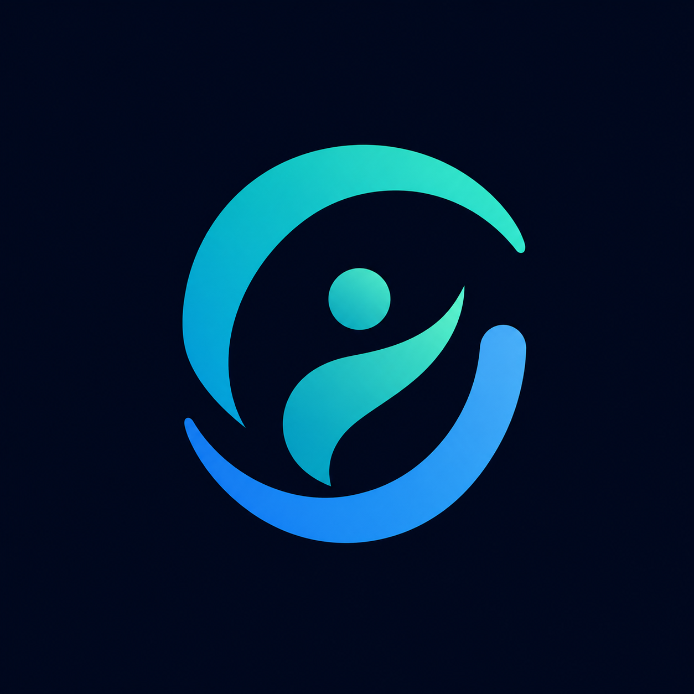

Define el marco clínico
Objetivos, tratamiento, límites, señales de alarma y criterios de escalamiento permanecen bajo dirección médica.

CareNet AICareNet AI ayuda a tus pacientes a mantenerse conectados con su salud entre visitas, creando continuidad, contexto longitudinal y una relación que fortalece su participación en el cuidado.
Diseñado alrededor de las personas. Conectado con su cuidado.
Cuando una persona entiende mejor su salud, reconoce cuándo actuar, participa activamente en su cuidado y llega mejor preparada a la atención médica. La continuidad y la fidelización aparecen como consecuencia de una relación asistencial que genera valor.
SARCI mantiene a la persona como agente activo de su salud. CareNet sostiene la continuidad entre contactos clínicos y activa o escala atención cuando el contexto supera lo que puede manejarse de forma autónoma.
Objetivos, tratamiento, límites, señales de alarma y criterios de escalamiento permanecen bajo dirección médica.
CareNet conversa con la persona, refuerza conciencia, hábitos, adherencia y seguimiento, y mantiene memoria longitudinal entre contactos clínicos.
Organiza síntomas, adherencia, hábitos, mediciones y cambios longitudinales preservando procedencia, temporalidad y nivel de certeza.
Ante cambios relevantes, CareNet intensifica seguimiento, solicita verificación o escala al equipo tratante. Con la recuperación, la intensidad clínica disminuye sin perder continuidad.
Una persona se convierte en paciente cuando recibe atención médica. CareNet conserva continuidad antes, durante y después de ese momento: sueño, hábitos, estrés, actividad, tratamiento, metas, contexto familiar y señales clínicas forman parte de una misma historia longitudinal.
Ve más allá de la fotografía de una consulta con señales estructuradas de lo que ocurrió entre visitas.
Diseñado para apoyar conciencia, autocuidado y participación activa, no solo para recolectar respuestas.
No todo pendiente requiere un mensaje. CareNet reevalúa contexto, recencia, riesgo y carga antes de intervenir.
Acompaña desde prevención y bienestar hasta enfermedades crónicas o recorridos clínicos complejos.
Hábitos, sueño, actividad, nutrición, factores de riesgo y metas personales.
Tratamiento, adherencia, síntomas, mediciones, laboratorios y seguimiento entre controles.
Tolerancia, funcionamiento, señales sutiles, coordinación y contexto relevante para el equipo clínico.
Cuéntanos brevemente cómo brindas atención. Adaptaremos la demo a tu práctica, especialidad o modelo clínico.